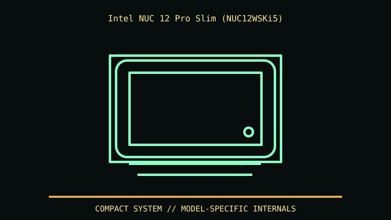

[ MODEL IDENTIFICATION // NUC 12 PRO WALL STREET CANYON SLIM KIT ]
Intel NUC 12 Pro Slim (NUC12WSKi5)
117 × 112 × 37 mm (W × D × H). The 54 mm tall NUC 12 Pro is a different chassis with different storage provisions.

REVISION CAVEAT: NUC12WSKi5 slim differs from NUC12WSHi5 tall and other CPU/SKU variants. Record exact kit and bundled adapter/VESA hardware.
Specifications & fit
| Catalog subcategory | Office and mini-PC enclosures |
|---|---|
| Model / generation | NUC 12 Pro Wall Street Canyon slim kit |
| Dimensions / form factor / clearance | 117 × 112 × 37 mm (W × D × H). The 54 mm tall NUC 12 Pro is a different chassis with different storage provisions. |
| Drive bays | M.2 storage; slim chassis has no 2.5-inch bay (unlike tall kit). |
| Compatibility | Proprietary NUC board, external DC adapter and VESA mount; not a Mini-ITX case. Kit and complete-system bundles differ. |
| Revision identification | NUC12WSKi5 slim differs from NUC12WSHi5 tall and other CPU/SKU variants. Record exact kit and bundled adapter/VESA hardware. |
Compatibility & preservation notes
Proprietary NUC board, external DC adapter and VESA mount; not a Mini-ITX case. Kit and complete-system bundles differ.
Keep rubber feet, VESA plate/screws and adapter together. Leave cooling openings unobstructed; preserve antenna leads during service.
- Record the complete model/SKU, serial/date label, board and bay/backplane identifiers, accessories and manual revision before disassembly.
- Verify the exact fan, radiator, PSU, riser, cable and drive configuration against manufacturer dimensions; a published maximum does not ensure every combination fits simultaneously.
- Keep original brackets, fasteners, trays, feet and front-panel parts labeled with the chassis. Do not force components into modified or incomplete specimens.
Manufacturer, archive & standards sources
- Intel — NUC 12 Pro technical specificationsPrimary manufacturer or technical-reference source for this named model; use the exact SKU/document revision.
- Intel — NUC12WSKi5 kit detailsAdditional manufacturer, archival, or dimensional reference. Options and specimen condition can change fit.
Approximate or convention-dependent dimensions are marked as such. Measure the individual unit for restoration, shipping and installation.